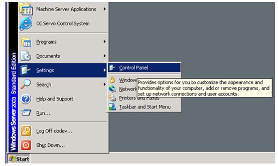
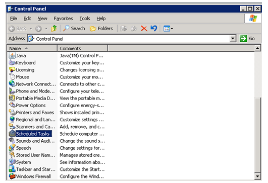
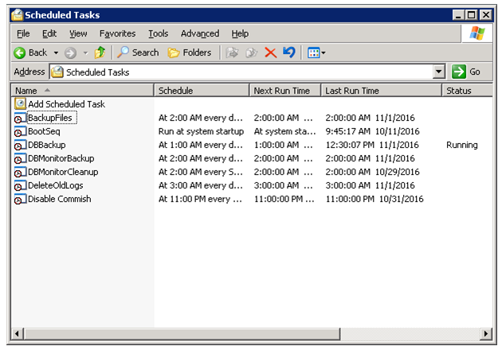
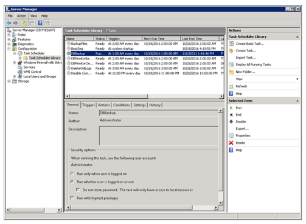

Manually Triggering a Machine Server Backup
Purpose
- This document describes how to manually start a backup of a Machine Server. This procedure is useful after installing a new version of software, configuring new backup or primary machine servers, or whenever it is desired to ensure that the backup machine server is up to date. Normal backups of the Machine Server are scheduled to occur at 1 AM in the morning (local time).
- This procedure only applies to Machine Servers which are using SWSet 223 (SCS-0237 GR-223) or later.
Application
This work instruction applies to all Space Plants that have FSC and Space IS Machines.
Safety
Follow all plant safety requirements.
Procedure
- Log off the obop account (using the sequence Start-, andgt;Shutdown-, andgt;Log Off).
- Log onto the Machine Server with the administrator account (password: scsgolden).
- Trigger the scheduled tasks.Note:
This step is for Windows Server 2003 systems only. If using Windows Server 2008 (SCS-0716 GR04 or greater), use step 4 instead.
- Navigate to the Control Panel (Start -, andgt; Settings -, andgt; Control Panel or see
Figure 1 below).
Figure 1. Figure 1: Navigating to the Control Panel (Windows Server 2003 Systems) 
- Locate the Scheduled Tasks control and double-click it (see Figure 2).
Figure 2. Figure 2: Scheduled Tasks Control (Windows Server 2003) 
- The scheduled tasks will now be displayed. Right-click each of the following
scheduled tasks (in order), and then select Run:
- DBBackup.
- DBMonitorBackup.
- BackupFiles Note:
Wait for the system to stop displaying the message “Running” prior to moving onto the next one. (See Figure 3 for an example of a running scheduled task).
Figure 3. Figure 3: Scheduled Tasks Window (Note that the DBBackup Task is Currently Running)

- When the BackupFiles scheduled task is complete, the backup will have been copied to the backup server.
- Navigate to the Control Panel (Start -, andgt; Settings -, andgt; Control Panel or see
Figure 1 below).
- Trigger the scheduled tasks. This step is for Windows Server 2008
systems only. If using Windows Server 2003 (SCS-0716 GR03 or prior), use step 3 instead.
- Open the Server Manager by clicking on the Start Menu,
then right-clicking the Computer icon, and then
selecting Manage (see Figure 4).
Figure 4. Figure 4: Opening Server Manager (Windows Server 2008) 
- When Server Manager opens, navigate to the task scheduler library as shown in
Figure 5.
Figure 5. Figure 5: Scheduled Tasks (WindowsServer 2008) DBBackup Running 
- The scheduled tasks will now be displayed. Right-click each of the following
scheduled tasks (in order) and then select “Run.”
- DBBackup
- DBMonitorBackup
- BackupFiles Note:
Wait for the system to stop displaying the message “ Running” prior to moving onto the next task. With Windows Server 2008, the task status does not automatically refresh, and the F5 key must be pressed to refresh the task status.
Note:See Figure 5 for an example of a running scheduled task
- When the BackupFiles scheduled task is complete, the backup will have been copied to the backup server.
- Open the Server Manager by clicking on the Start Menu,
then right-clicking the Computer icon, and then
selecting Manage (see Figure 4).
- Follow the instructions in FES-03-117 Verifying Machine Server Backups to validate that the backup worked correctly
Equipment
A Machine Server with a configured backup device.
References
- FES-03-117 Verifying Machine Server Backups
Document Classification
- Asset Protection and Stability
- Organization and Training
Collaboration
|
Country Group |
Role |
Name |
|
Americas North |
Forming Electronics Specialist |
Dan Knuckles |
|
Europe |
Forming Electronics Leader |
Remko Beckers |
|
Central Europe |
Regional Leader Forming Electronics |
Ruud Bormans |
|
France - Spain |
Jean-Pierre Locato |
Jean-Pierre Locato |
|
Latin America |
IS Machine Leader |
Miguel Morales |
|
Engineering - Forming |
Associate Engineer |
Jose Gonzalez |
|
Global |
Global Forming Electronics Leader |
Franklin Barrios |
Revision History
| 2016-12-01 |
Originally Released as Process Control SOP-16-010 |
| 2022-07-05 |
Approved by Franklin Barrios, Global Leader FES Network Moved to GMF Site as FES-03-119 |